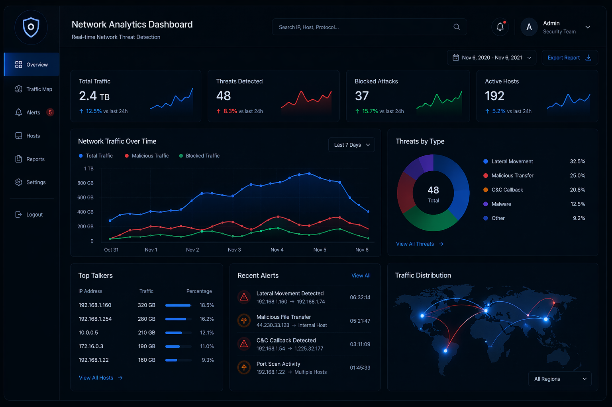
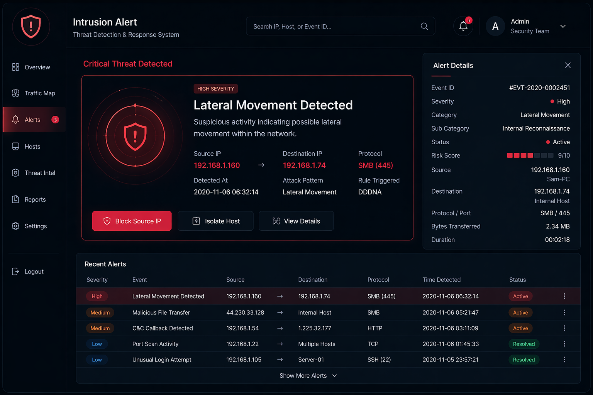

An anomaly-based network security system designed to detect suspicious behavior and prevent unauthorized access in real time.


Traditional security systems rely on predefined rules and fail to detect new or unknown attack patterns, leaving systems vulnerable to zero-day threats.
Developed an anomaly-based IDS/IPS that monitors traffic patterns and identifies deviations from normal behavior. The system flags suspicious activities and can trigger automated responses to prevent potential attacks.
Improved detection of unusual traffic patterns and enhanced system security by identifying threats that traditional rule-based systems would miss.
Python, Django, Machine Learning Models, Network Monitoring, API Integration
GitHub: Anomaly Intrusion Detection